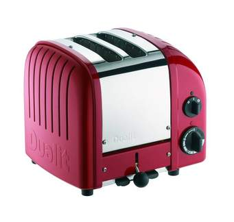
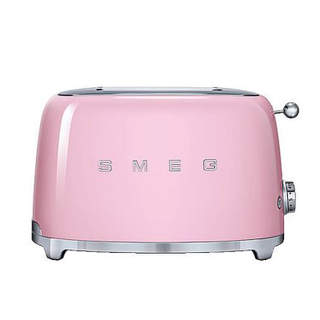
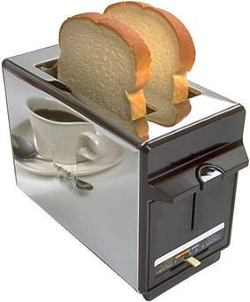
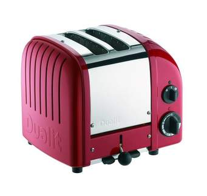
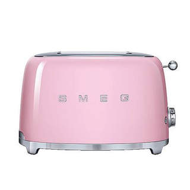
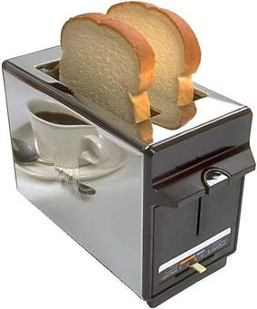

Looking for the best quality of toasters you are right were you belong at The Wildly Market, we offer the best quality of toasters such as pop-up toasters , our pop-up toasters come in 2 slice and 4 slice varieties and are specifically designed for toasting. We also offer countertop toaster oven , which are good for making toast, but can be used for a number of other types of cooking.we also have sandwich toasters which are good in making the best sandwiches ever.Shop online for toasters in our appliance range at @The Wildly Market.Our toasters have the following features:
 







| Product | Price of Product | Stock Avaliability | Types of brands | Package dimensions | |
|---|---|---|---|---|---|
| Toaster | our prices start from R160 to R1599,99 depending on which product brand you are buying | we stock 200 pop-up toasters, 200 countertop oven toasters and 200 sandwich toasters | safeway | 10"x8"x9" | |